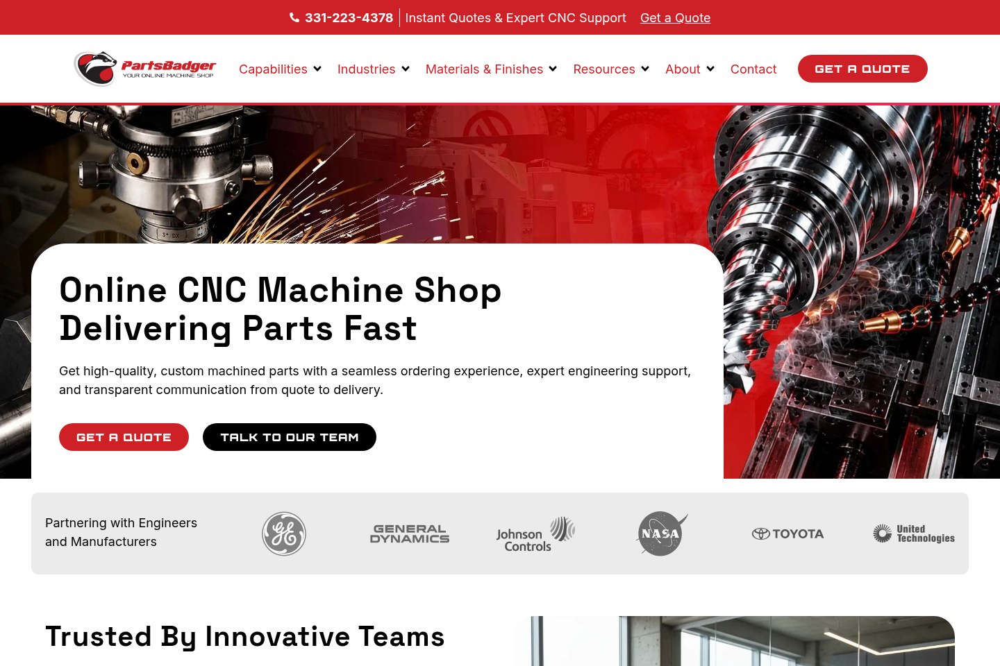
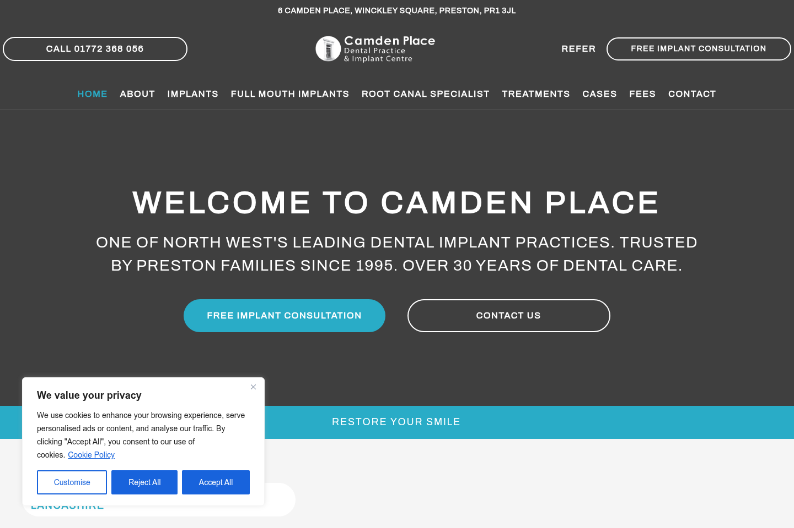

Figma to WordPress
Accurate, responsive builds that preserve the thinking behind the design.
Independent designer / developer
I translate considered Figma designs into polished WordPress experiences — responsive, intuitive, and built to hold up beyond launch.
Elementor Pro / Responsive systems / Technical SEO
Scroll to explore
About & expertise
I'm a WordPress website designer and developer focused on the space between a strong visual idea and the final browser experience. I build from Figma with care for rhythm, responsiveness, and the details that make a site feel finished.
My work spans new Elementor Pro builds, existing-site improvements, responsive repair, landing pages, content templates, and practical technical SEO implementation.
Accurate, responsive builds that preserve the thinking behind the design.
Reusable templates, global styles, and layouts clients can maintain with confidence.
Purposeful behavior from widescreen to mobile, not a desktop layout squeezed smaller.
Semantic structure, on-page foundations, performance hygiene, and clean handoff.
Selected work
Five recent WordPress engagements, from full Figma builds to focused content and SEO improvements.
 Visit live site
Visit live site
01 / 05
Elementor Pro implementation based on a client-provided Figma design.
Figma to WordPress · Elementor Pro · Responsive development
 Visit live site
Visit live site
02 / 05
Figma-to-WordPress implementation for a trade credit platform.
Figma to WordPress · Elementor Pro
 Visit live site
Visit live site
03 / 05
Collaborative Figma design work followed by the Elementor implementation.
Collaborative design · Elementor · Responsive development

Visit live site04 / 05
Redesigned the blog archive and individual article templates for clearer content discovery.
UX refinement · Blog archive · Post templates
05 / 05
Elementor landing pages, responsive implementation, and on-page SEO enhancements for an established dental and implant centre.
Landing pages · Responsive development · On-page SEO

Process
Clarify the audience, goals, content, constraints, and what a successful build needs to do.
Map the page system, responsive behavior, reusable patterns, and the details that need protection in development.
Build in WordPress and Elementor Pro, then iterate across browsers and real device widths.
Complete accessibility, performance, content, SEO, and interaction checks before a clean handoff.
Have a project in mind?
If you need a thoughtful WordPress build, a stronger responsive experience, or a focused site improvement, I'd like to hear about it.